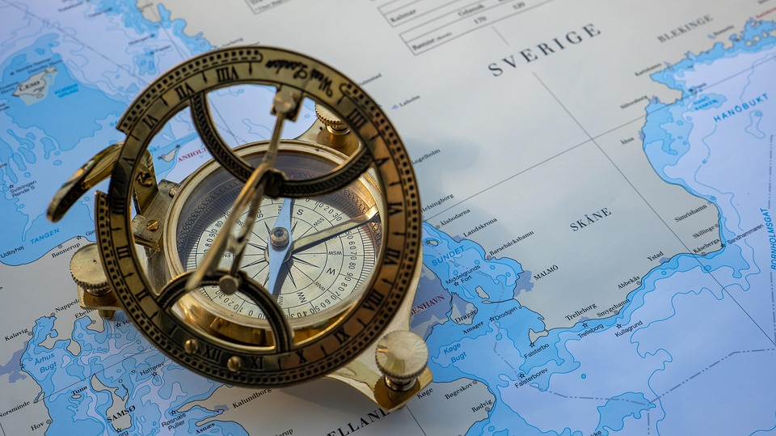
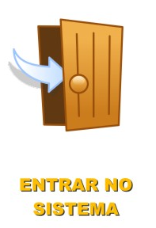
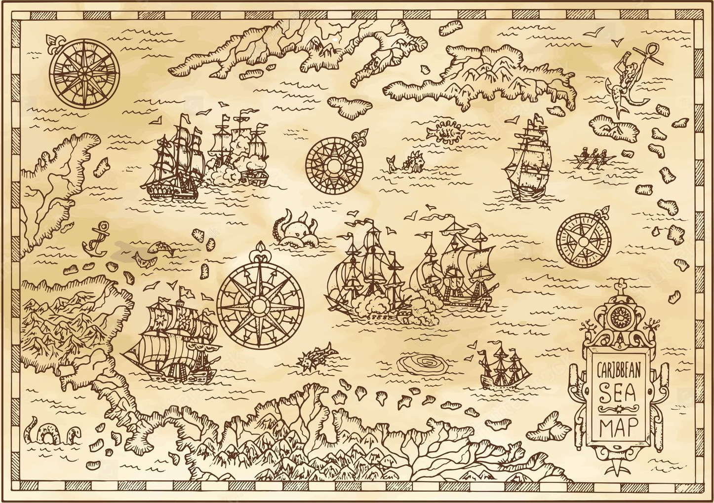

Mapa iterativo
Visualize situações diretamente no mapa de forma interativa.(em ajustes)
Calculadora de Velocidade
Calcule a Velocidade média realizada por uma embarcação apartir de 2 horarios e 1 distância navegada.

Calculadora de ETA
Calcule a Data-Hora estimada de um contato após uma distância percorrida.
Consultar bandeira (MMSI)
Identifique o país de origem a partir do código MMSI.

Conversor GMS >> DECIMAL
Converta coordenadas geográficas no formato gms para decimal.
Conversor DECIMAL >> GMS
Converta coordenadas geográficas no formato decimal para gms.

Conversor PREPS.GOV
Converta .TXT do preps.gov para uma planilha .XLSX

Distancia e Tempo entre Portos
Calcule distância e tempo entre portos marítimos com rapidez.
Cálculo de Interceptação
Calcule o ponto de maior aproximação entre dois contatos marítimos.

Carregamento de Cenários
Carregue planilhas com múltiplas abas para visualizar rotas simultâneas de contatos marítimos.
Formatador de Mensagem
Preencha formulários padronizados para gerar mensagens táticas e exportar em .txt.
Pesquisa Analítica
Preencha as lacunas para gerar a Pesquisa Analítica.